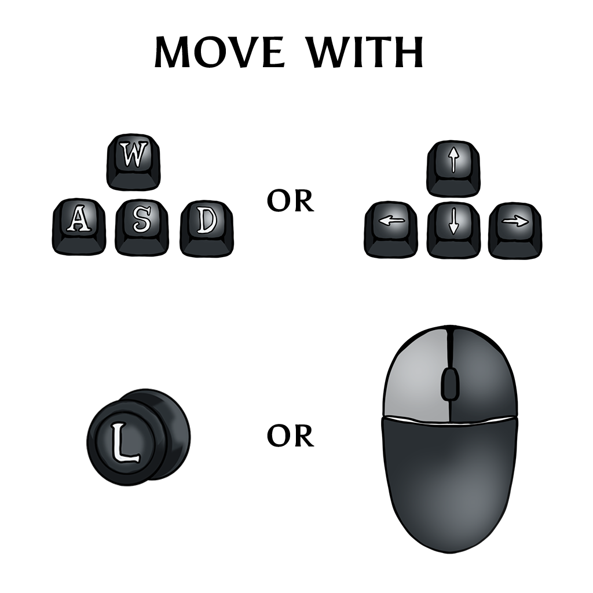
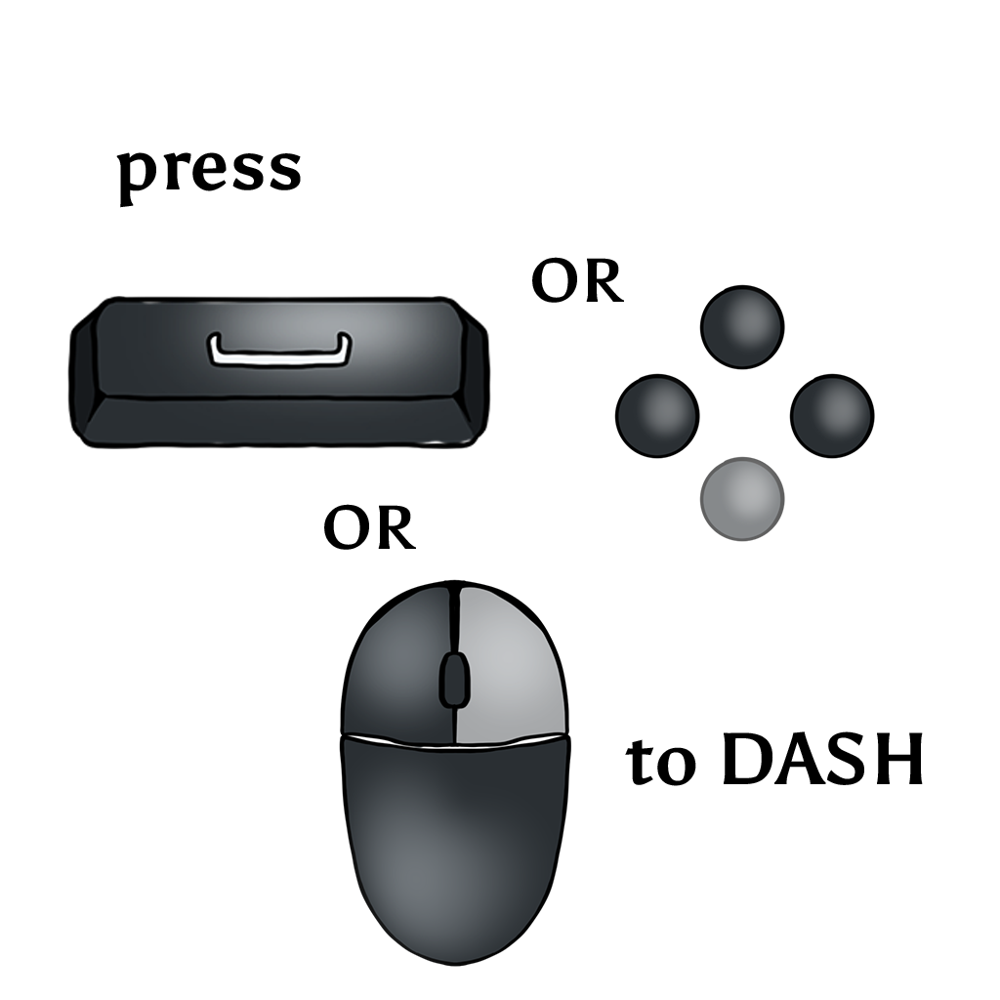

→ Play Mycofall on Steam
General
Mycofall is a bullet-heaven survivors-like auto-shooter. Defeat hordes of infected insects to evolve and morph powerful abilities and weapons. Collect mycelium, grow stronger, unlock permanent upgrades and defend the forest solo or together in online co-op.
Story
Long ago, when the forest was still healthy and full of life, the Mykari lived in harmony with it. They were a small people who grew from the forest floor and through the power of synergy were deeply connected to the forest.
But as the years went by, the insects became increasingly numerous and threatened the roots of the forest. As the forest grew weaker and the Mykari also suffered from the plague, synergy awakened to new strength. She gave the Mykari the gift of shaping powerful mycelium and using it to create a shimmering protective film over the deep roots of the forest.
Insects that ate this mycelium were poisoned and died, and for a long time the deep roots of the forest remained protected…
But the insects learned... They did not eat greedily, not all at once. Day after day they took only traces of the film. It weakened them, distorted their insides – but it did not kill them. Over many cycles, only those survived who endured the change.
Generation after generation became more resistant. The leaders of these colonies began to choose. They let only those offspring live whose bodies did not reject the protective film, but absorbed it. From the shield came food. From change came power. Thus the Pestinsects were born. Wherever they touch the forest, it begins to rot.
The forest was in danger of dying again, and the Mykari, once peaceful, had to change – just like their enemies. The mycelium that was once their shield was now used to kill. They became warriors, even those who never wanted to be. For if the people of the Mykari die, the forest falls with them, and synergy fades…
How to Play
Mycofall plays itself, mostly — just move, dodge and let your skills do the rest.
Move

WASD or Arrow Keys, hold the Left Mouse Button and move toward the cursor, or the Controller Left Stick / D-Pad.
Dash

Space, the Right Mouse Button, or the Controller face button. You have 2 dash charges that recharge over time — dashing also grants brief invincibility.
- Attacking: Automatic — your equipped skills fire on their own at nearby enemies. Focus on positioning and dodging.
- Pause / Settings: Escape
- Confirm a selection (level-up, shop, menus): Click, E / Space / Enter, or the Controller confirm button